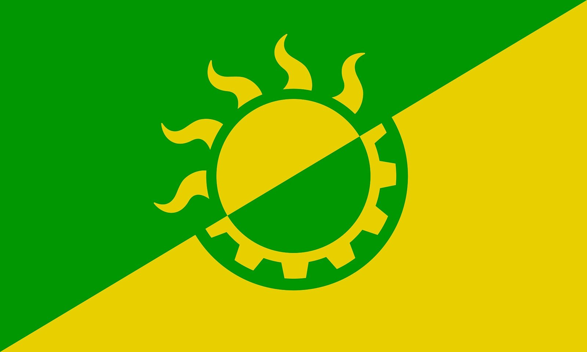

References / Other / 540
Solarpunk flag
A green and yellow flag split on the diagonal, with a sun whose lower half is a gear: the most widely shared emblem of the solarpunk movement on Wikimedia Commons.
- Source
- Wikimedia Commons: File:Solarpunk Flag.jpg
- Creator
- @Starwall@radical.town (Commons user StarwallOfRadical.town)
- Made
- 2019
- Style
- Solarpunk (agent-proposed, not yet reviewed by a person)
- Moods
- Hopeful, sunlit, emblematic
- Evidence
- Downloaded and inspected the Commons file (original 5000 × 3000 px, viewed at 1600 × 960 px). The flag exists only as this digital file and its vector redraw, File:Solarpunk Flag Vectorized Version.svg.
- Reviewed
- Rights
- Open license, stored. License: CC-BY-SA-4.0. Rights policy


Context
The uploader’s description says the yellow stands for solar power, the green for sustainability, the half-gear for reclaiming technology for sustainable projects and infrastructure, and the sunbeams for hopefulness and futurism. Commons file page.
Commons lists the file in Category:Solarpunk unofficial flags, with a blue-diagonal variant by the same author and several other community logos. No body has adopted an official flag.
Observed
- A diagonal line runs from the lower left to the upper right. The upper left is a strong leaf green and the lower right is a warm sun yellow.
- A circular sun sits at the centre. Its disc is counterchanged across the diagonal, yellow on the green half and green on the yellow half.
- Seven curling, flame- or sprout-like rays rise from the upper half of the sun. The lower half has a ring of square gear teeth.
- The colours are flat, with no outline, gradient, or shadow.
Why it belongs
The flag compresses the style’s argument into one sign: half sun, half machine, with rays drawn like shoots. The curling rays are the only organic, Art Nouveau-like line in an otherwise geometric design.
Its two-colour palette is narrower than solarpunk illustration, which adds sky blue. The blue-diagonal variant on Commons adds that third family.
Borrow
Split a field on the diagonal and counterchange one central motif across it.
Draw the rays of a sun as curling shoots so that one shape reads as both energy and growth.
Measured
Machine-extracted by tools/image-traits.py on . Full measurement.
- Mean chroma
- 0.74
- Palette
- #019702 50%
- #e8cf00 48%
- #7ab410 0%
- #1d9707 0%
- #9abf12 0%
- #b9c911 0%
- #d1d00f 0%
- #56a90d 0%

